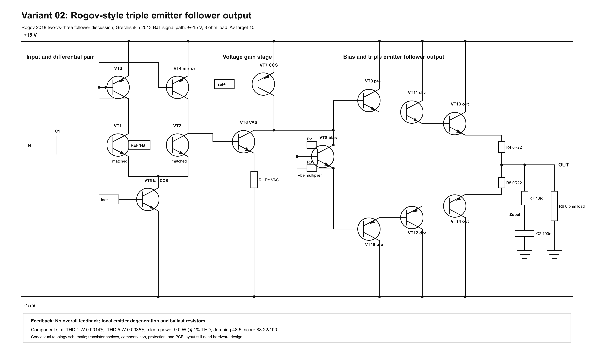
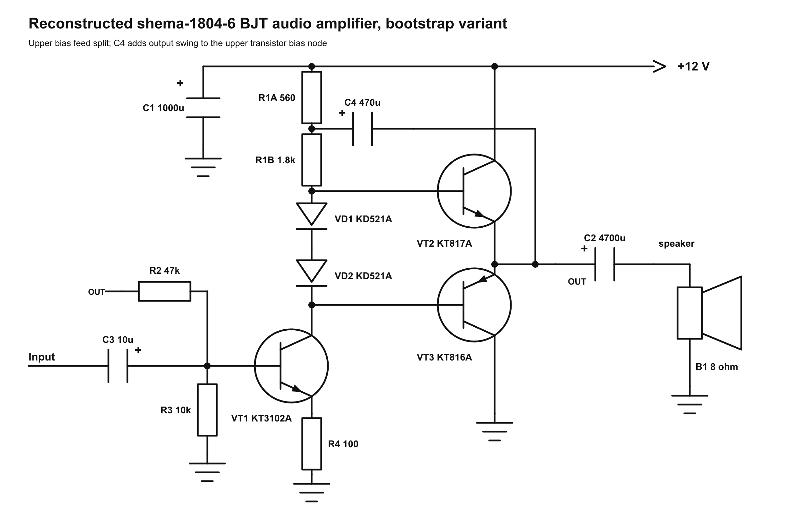
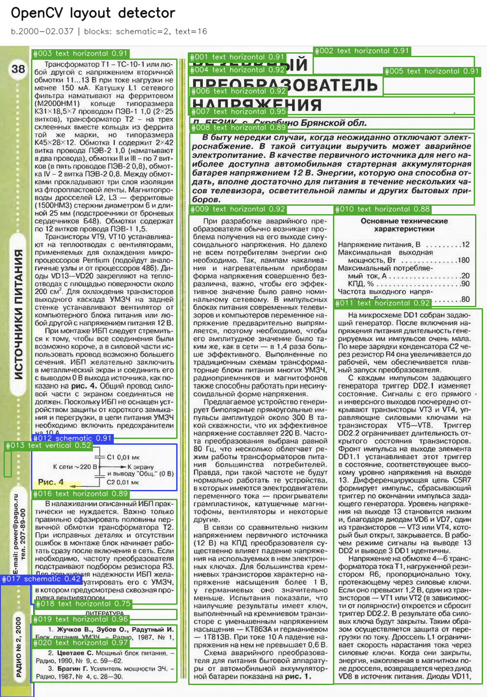
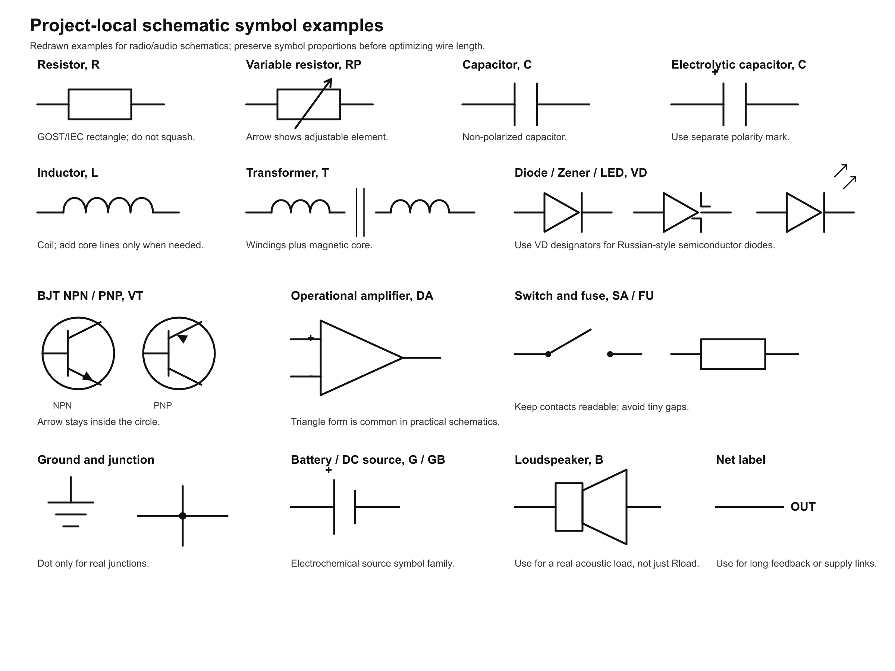

{kind=link}

001 Rogov Triple EF Amplifier
Selected amplifier variant from the Radio.ru-inspired five-topology study.
Локальная рабочая карта проекта: схемы и SPICE-результаты, распознавание страниц журналов, библиотека условных графических обозначений.
Каждая папка в results/ хранит схему, графики, данные моделирования, netlist и описание для одного эксперимента или схемы.

Selected amplifier variant from the Radio.ru-inspired five-topology study.

This result verifies that the project can use a real open-source SPICE backend.

This folder contains a local reconstruction of the amplifier schematic from:
Пайплайн разбивает сканы страниц на текст, изображения, схемы, диаграммы, таблицы и служебные области. Отчет ниже показывает контрольные страницы парами: оригинал и разметка.

Локальная библиотека SVG/PNG символов для GOST/ESKD, IEC, ANSI и общих элементов. Используется как визуальный источник для генераторов схем и правил отрисовки.
part_symbols/*/symbols/.python scripts/lint_svg.py part_symbols.
npm run check runs unit tests, SVG lint and whitespace checks.
npm run layout:report regenerates the OpenCV page-recognition report.
npm run project:index regenerates this page.
Work history is recorded in docs/work_journal.md. Drawing rules live in docs/schematic_drawing_rules.md.
Local tool inventory is kept in docs/downloaded_tools.md.
{kind=link}
{kind=link}
{kind=link}
{kind=link}
{kind=link}
{kind=link}